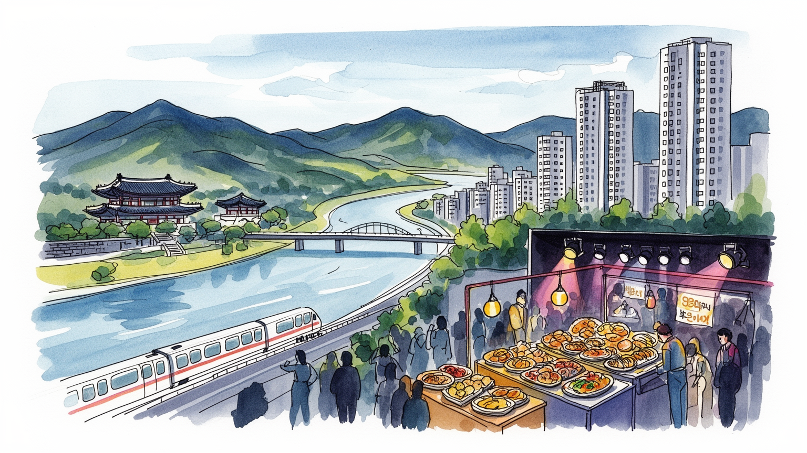

地政学
漢江流域に広がり、軍事境界線に近い首都として安全保障と都市生活が近接する。

🇰🇷 韓国 / アジア / World City Atlas
安全保障と輸出産業の首都圏。世界都市として、経済規模だけでなく、地理、産業、宗教文化、暮らし、観光を分けて読みます。
都市の骨格
漢江流域に広がり、軍事境界線に近い首都として安全保障と都市生活が近接する。

漢江流域に広がり、軍事境界線に近い首都として安全保障と都市生活が近接する。
財閥本社、通信、ゲーム、映像、化粧品、医療、大学が集まり、周辺都市の製造業と連動する。
儒教的家族観、仏教寺院、キリスト教会、民間信仰が重なり、Kカルチャーは輸出産業にもなった。
景福宮、明洞、弘大、江南、東大門、漢江公園、集合住宅地が多層的な生活景観を作る。
Geography
都市の経済力は、地図上の位置、港湾、鉄道、空港、河川、周辺都市との関係から生まれます。
漢江流域に広がり、軍事境界線に近い首都として安全保障と都市生活が近接する。
ソウルを単体の市街地としてではなく、周辺の住宅地、産業地、物流施設、教育機関と接続した都市圏として見ると、GDPの大きさが日々の通勤、土地利用、観光、文化施設の配置にどう表れているかが分かります。
財閥本社、通信、ゲーム、映像、化粧品、医療、大学が集まり、周辺都市の製造業と連動する。
この都市では、華やかな中心業務地区の背後に、清掃、建設、配送、調理、介護、教育、保守、警備といった日常的な労働があります。都市の経済規模を見るときは、数字だけでなく、その数字を支える人と場所を同時に見る必要があります。
Industry
主力産業だけでなく、周辺の小さな仕事が都市を毎日動かしています。
Culture
宗教施設、祭礼、市場、劇場、大学、移民地区は、都市の経済とは別の時間を保存します。
儒教的家族観、仏教寺院、キリスト教会、民間信仰が重なり、Kカルチャーは輸出産業にもなった。
景福宮、明洞、弘大、江南、東大門、漢江公園、集合住宅地が多層的な生活景観を作る。